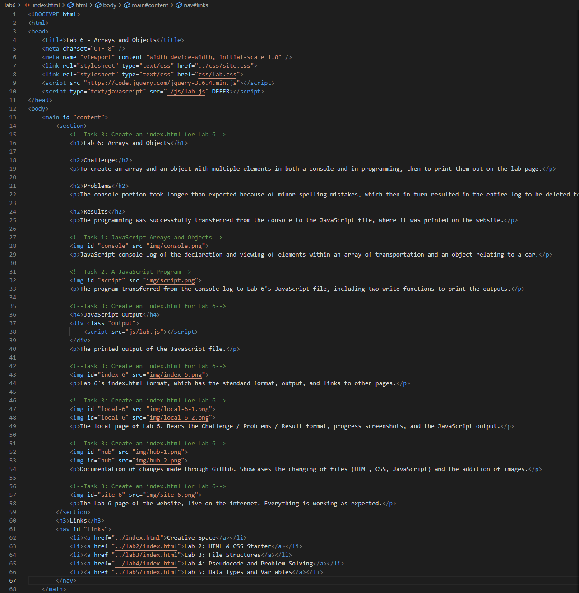

Lab 6: Arrays and Objects
Challenge
To create an array and an object with multiple elements in both a console and in programming, then to print them out on the lab page.
Problems
The console portion took longer than expected because of minor spelling mistakes, which then in turn resulted in the entire log to be deleted to fix them, as it wouldn't fit in a single screenshot otherwise.
Results
The programming was successfully transferred from the console to the JavaScript file, where it was printed on the website.
JavaScript console log of the declaration and viewing of elements within an array of transportation and an object relating to a car.
The program transferred from the console log to Lab 6's JavaScript file, including two write functions to print the outputs.
JavaScript Output
The printed output of the JavaScript file.
Lab 6's index.html format, which has the standard format, output, and links to other pages.
Lab 6's lab.css page. Features some minor adjustments of font size, background color, and maximum size for images.
The local page of Lab 6. Bears the Challenge / Problems / Result format, progress screenshots, and the JavaScript output.
Documentation of changes made through GitHub. Showcases the changing of files (HTML, CSS, JavaScript) and the addition of images.
The Lab 6 page of the website, live on the internet. Everything is working as expected.